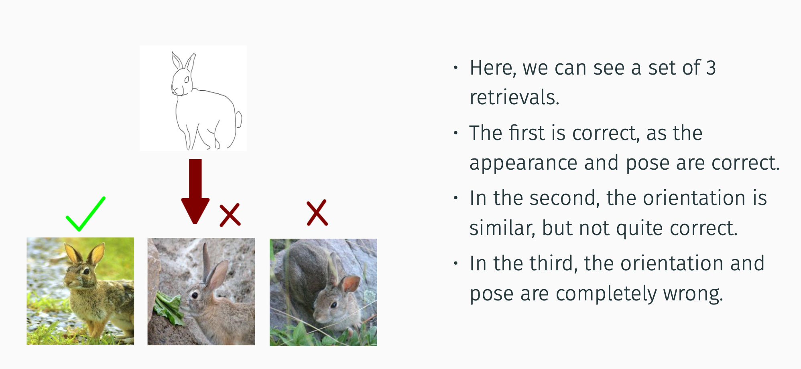
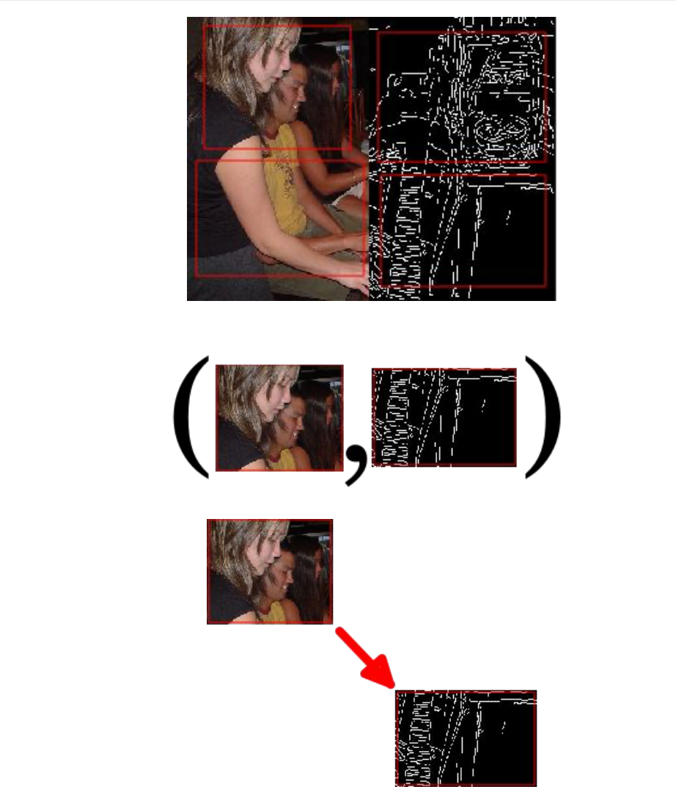
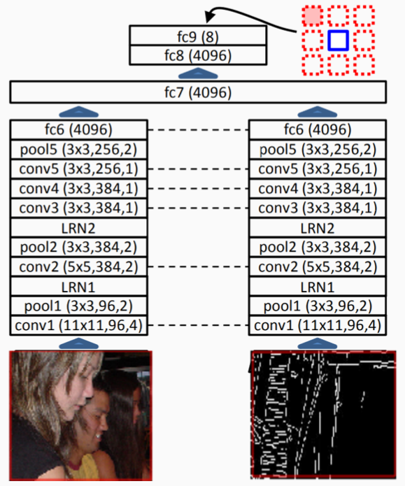
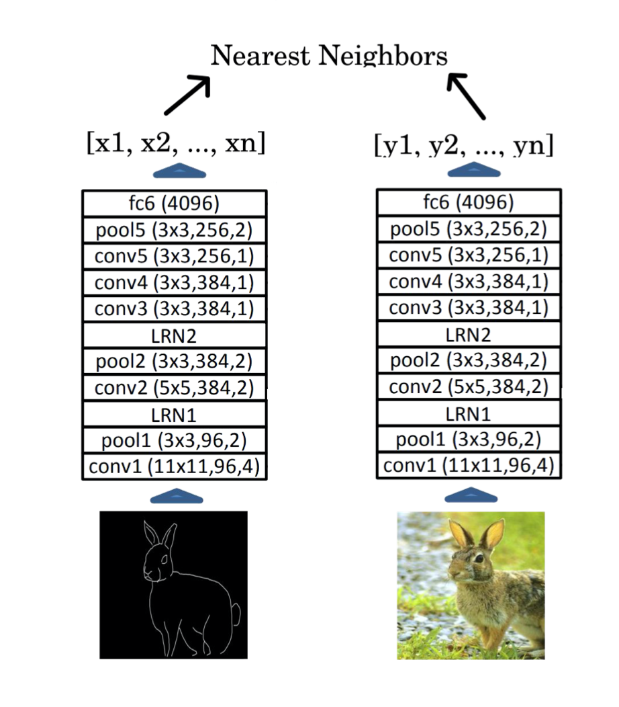
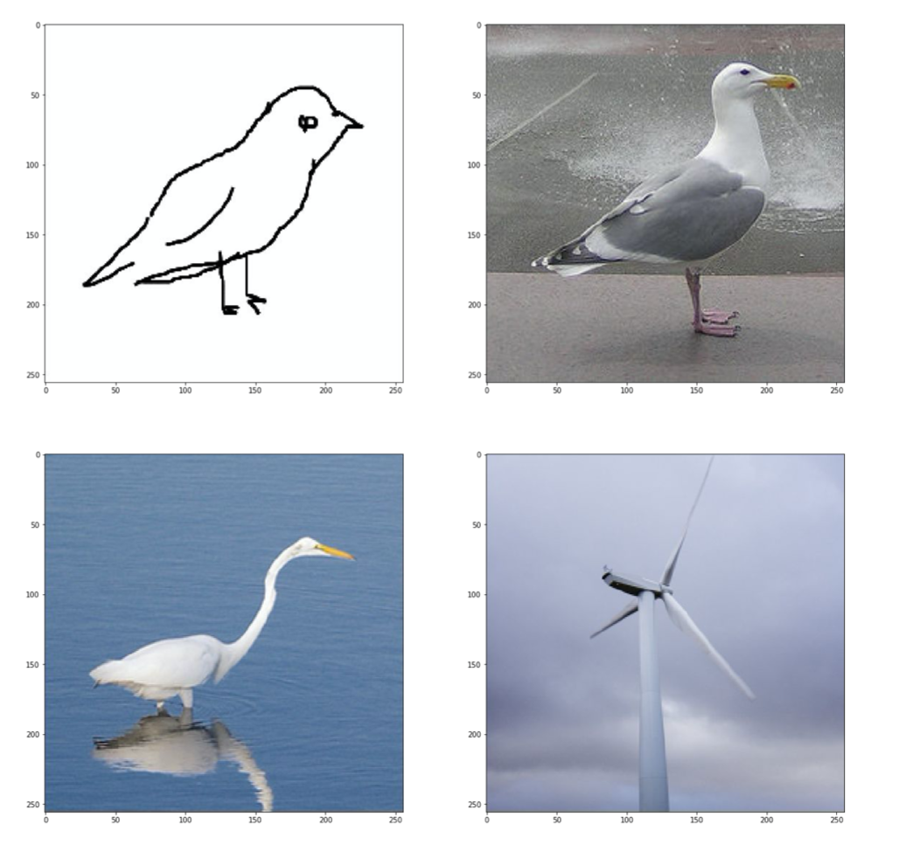
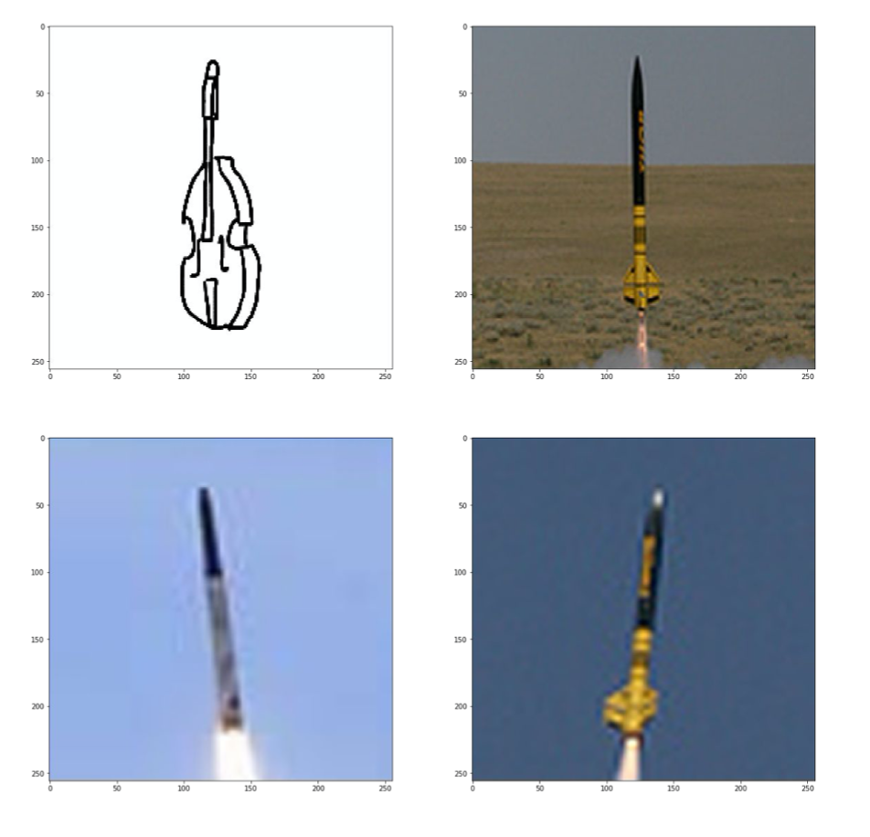
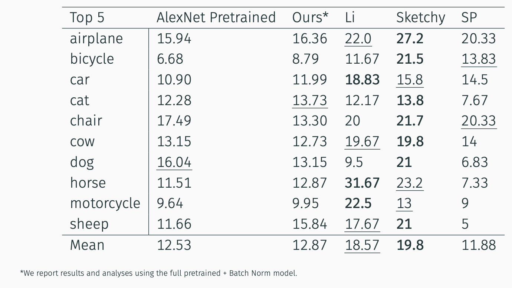

Problem Statement
- Given a hand-drawn sketch, retrieve the image instance that this sketch was drawn for 
Related Work
- Unsupervised Visual Representation Learning by Context Prediction
- The Sketchy Database: Learning to Retrieve Badly Drawn Bunnies
- Cross-modal Subspace Learning for fine-grained sketch-based image retrieval
Approach
Assumptions
=======Problem Statement
- Given a hand-drawn sketch, retrieve the image instance that this sketch was drawn for
Related Work
- Unsupervised Visual Representation Learning by Context Prediction
- The Sketchy Database: Learning to Retrieve Badly Drawn Bunnies
- Cross-modal Subspace Learning for fine-grained sketch-based image retrieval
Approach
Assumptions
>>>>>>> Local- Aligned, paired images available. For this, we compute canny edges of the images in the PASCAL VOC dataset.
- Clustering image and sketch embeddings from a well-trained network will result in well-formed discrete clusters that are domain agnostic.
- The model that performs well on cross domain context prediction will perform well on the cross-domain image retrieval task.
Pre-text Task
=======Pre-text Task
>>>>>>> Local- We divide the image into 4 regions, with uneven spacing and jitter
- We then extract two patches, one from each domain, i.e. images from Pascal, and their Canny edges
- We finally compute the relative positioning of the patches using the context encoder
 
Image Retrieval
=======
Image Retrieval
>>>>>>> Local- We first compute embeddings for the query sketch using AlexNet trained on the pretext
- We then perform a nearest neighbour search on the embeddings from the dataset of images
- We retrieve the nearest 5 and 10 images for top-5 and top-10 similarity scores

Results
Visual Results

=======Results
Visual Results
>>>>>>> Local- Here is one of our “bad” results – we can see that the correct instance image is present in the retrieved images
- We can also see that the other bird result also captures similar pose as the sketch

- Here is one of our “bad” results – we see that the correct instance wasn’t retrieved
- Additionally, the correct class wasn’t retrieved either
- Note how despite the incorrect class/instance retrieval, we do see similarities in the pose and shape between the sketches and the retrieved images
Comparison to Baselines

- Although our approach didn’t beat out our main baseline, the Sketchy database approach, we were able to beat out the feature pyramid approach with no supervision
Future Work
=======- Here is one of our “bad” results – we see that the correct instance wasn't retrieved
- Additionally, the correct class wasn't retrieved either
- Note how despite the incorrect class/instance retrieval, we do see similarities in the pose and shape between the sketches and the retrieved images
Comparison to Baselines
- Although our approach didn't beat out our main baseline, the Sketchy database approach, we were able to beat out the feature pyramid approach with no supervision
Future Work
>>>>>>> Local- Study the effects of further training on pretext task
- Use context-encoder as pretraining for supervised image retreival models
- Use more sophisticated feature extractors (like GoogLeNet or VGG) that more recent Sketch-Based Image Retrieval methods use